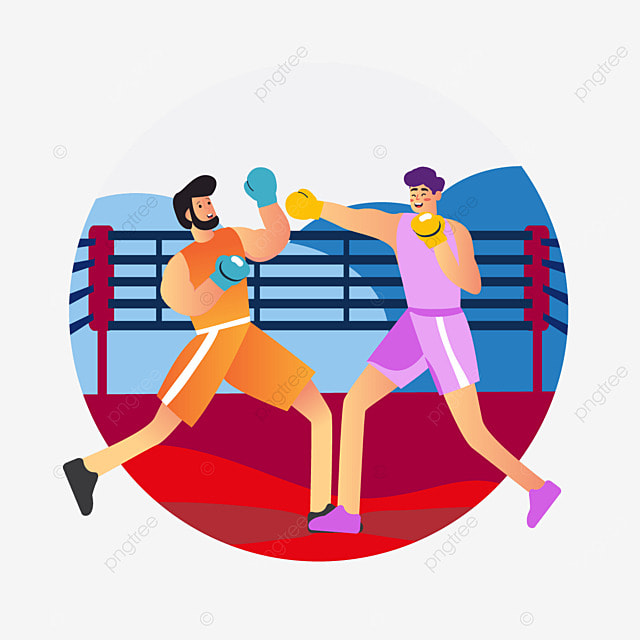

拳擊是由兩名選手手戴拳套，遵循比賽規則，互相用拳頭進行攻擊和防禦的運動，目前拳擊運動分為業餘拳擊和職業拳擊，業餘拳擊是以鍛練身心為目的，職業拳擊則是以贏得勝利獲取獎金為目的。拳擊運動的起源，最早見於西元前 40 世紀的埃及，且在古代奧運中，拳擊比賽就已經被列為正式比賽項目之一，但 1896 年第一屆奧運會因希臘君王認為拳擊太過暴力，未將拳擊比賽列為比賽項目，直到 1904 年第三屆奧運會才將它列為正式比賽項目，但第五屆奧運會因瑞典法律禁止拳擊運動，拳擊比賽又因此消失在奧運會項目中，直到 1920 年拳擊比賽才又出現在奧運比賽項目中，並一直維持到現在。
